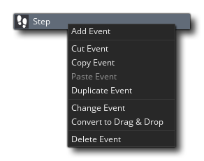

物体是一个用来控制游戏各方面的具体事件的特殊资源。大多数时候他们有一个与他们相关的精灵，以便您在游戏室看到他们，但有时候它们被用作“幕后”控制器来做与用户相关的事情或时间等... 他们可以给予行为和对某些事件做出反应以及彼此,和你在游戏看到的大多数事情都是基于对象和他们的相互作用。现在,我们说“基于”因为你没对象直接进入游戏房间,而是你把< b0 > < / b0 >的这些对象实例基本上是副本(或如果你喜欢克隆)对象的资源。这很重要，因为这意味着物体和实例 <i3>不</i3> 同，每一个实例均有自己的一套功能。
为了澄清这一点，想想用 GameMaker Studio 2制作的游戏。所有的角色，怪物，球，墙壁等都是您在资源树中创建的对象。然后，将对象拖动到房间编辑器</ a1>中的房间，以创建从基本对象模板复制的实例。然后可以在编辑器本身或通过代码更改房间中的实例，以便可以缩放或着色，或从“基础”对象修改其他详细信息。所以当我们谈论影响或改变一个实例的东西时，我们的意思是它会影响一个房间中一个对象的特定副本。只有那一个单一的实例受到影响，而其余的都不受影响。但是，当我们谈论影响或改变对象时，我们意味着我们正在修改资源树中的对象，并且我们所做的任何事情也将反映在从那一点创建的所有实例中。所以，对象是实例的模板，实例是我们在一个房间里进行我们的游戏。
要在游戏中创建一个对象，您可以右键单击对象资源文件夹上的 ，然后单击创建选项。这将打开此页面顶部的窗口，具有以下部分：
，然后单击创建选项。这将打开此页面顶部的窗口，具有以下部分：
在这里你可以给你的对象一个名字。该名称不应包含空格或未授权的字符（只允许使用字母数字字符和下划线“_”），并且应该简短但难忘，以便稍后在可能有许多文件时可以轻松识别资源。例如，许多人使用前缀或后缀来识别资源之间的差异，如“obj_Ship”或“Ship_obj”。
接下来你可以选择你想要的对象的精灵。点击精灵框上的鼠标左键
，资源浏览器将显示资源树中所有可用的精灵列表：
然后，您可以选择要用于该对象的一个。使用分配给对象的精灵，您可以单击编辑Sprite按钮
来更改精灵属性，或者如果您没有该对象的精灵，但希望创建一个，可以单击添加Sprite按钮
到创建一个新的精灵资源并进行分配。您还可以通过单击编辑图像按钮
来编辑已分配的精灵资源图像以打开图像编辑器。
在精灵分配区域下方，您可以选择一个特定碰撞掩模的按钮。默认情况下，一个对象将使用分配给它的sprite的碰撞属性，但是有时您可能希望碰撞基于不同的掩码形状。例如，你可能有一个自上而下的游戏，主要的精灵有一个矩形的碰撞掩模，但是使碰撞更平滑的圆形面具可能会更好。在这些情况下，您可以单击“碰撞掩码”按钮并选择另一个精灵资源，因此现在对象的实例将绘制</ i1>指定的精灵，但是从掩码</ i2>精灵之间的基础碰撞。
Here you are presented with the following options for your object:
Visible indicates whether instances of this object are visible when the room starts. 通常选择可见，但是有时不可见也是有用的。例如，可以使用点方式控制怪物移动，或者跟踪并进行一定的动作。不可见的物体仍然会对事件作出反应，如果他们有精灵或者遮罩也会发生碰撞事件，他们只不过是不可见并且不会执行绘制事件。 draw event. 该选项默认为开（On）.
当您将实例标记为稳固时，您会告诉 GameMaker Studio 2 </ i0>，它应该尝试在触发碰撞事件之前解决任何冲突。这是一个非常基本功能，实际上所有这些都是将实例移回到在执行任何代码或DnD™之前检测到冲突之前的位置本身，因此使用有限。
持久化 - 持久化对象是房间改变时不会消失的对象，而是“持续存在”并被转移到新房间中。当您明确地销毁它时，它将只会消失，或者使用destroy操作或代码。这意味着如果将永久对象放在一个房间中，它仍然可以在所有后续房间中使用，并将继续执行分配给其对象属性中的事件的任何操作，创建事件，这只是在最初创建时才被触发一次，而不是当您更改为新房间时才被触发。
当你有一个主角从一个房间移动到另一个房间，并且你想保持该对象中的变量是一样的时候，这是方便的，但你应该非常小心地创建和销毁持久性对象正确，因为你可以轻松错误地让您的项目出现错误。
还要注意，持久化对象仍然会触发游戏开始，游戏结束，房间开始和房间结束事件，但是如果您重新启动游戏（例如，使用game_restart（）函数），则所有持久对象将被删除在游戏再次创建时存在。另请注意，如果您停用持久性对象，它将不会再从一个房间传递到另一个房间，除非在客户端事件触发之前重新启动。
当您检查使用物理框时，您告诉 GameMaker Studio 2 </ i1>该对象应该是物理世界</ a2>的一部分。检查此操作还将打开一个进一步链接的窗口，您可以在其中定义该对象的所有实例的物理属性。有关这方面的更多信息，请参见物理学部分的下一页。

选项
选项部分定义对象的不同属性选项，以及实例在放置在房间中时的行为方式。在这里，您可以添加事件，即游戏代码的“构建块”，设置对象是否具有父项，如果要启用物理功能，还可以设置物理属性。
那么，什么是事件？基本上，这些是在游戏循环中谨慎的时刻，根据您为他们编程的内容，事情发生。 GameMaker Studio 2 适用于这些事件的周期 - 从房间开始到完成之时，每个步骤（一步是在游戏时间的一瞬间，由房间速度设置控制），一系列事件被运行或检查，您可以选择将代码或DnD操作放置在响应这些事件的对象中。
我们来看一个典型的对象设置，包括事件和代码：
正如你可以在我们的示例对象中看到的那样列出了许多应该响应的事件，但是最初当你创建一个对象时，这个列表是空的，你必须决定你需要哪些事件，那些对象应该做什么事件被触发。要将事件添加到对象中，请按事件列表底部的添加事件按钮，弹出以下窗口：
这是对象可以响应的所有基本事件的列表，尽管其中一些事件还具有子事件以进一步改进行为。例如，如果您添加一个按键
事件，您将会再次弹出一个子事件，让您选择该对象应该响应的键。选择您的活动后，代码窗口将被链接到右侧并打开。您现在可以编辑代码，为您的对象提供特定的行为或对该事件的反应。
任何事件都可以单击鼠标右键
获取以下菜单选项：
这些选项是：
- 添加事件 - 从事件列表中添加新事件。
- 剪切/复制/粘贴事件 - 剪切，复制或粘贴所选事件。You can use the standard keyboard shortcuts too:
/
+ X,
- 重复事件 - 复制所选事件。这将取代所选事件的内容，并在您指定的另一个事件中复制它们。
- 更改事件 - 更改事件。这将提示您选择另一个事件类别，一旦选择了当前事件的内容将被更改为新事件（删除过程中的原始事件）。
- 转换为拖放/代码 - 使用代码或使用拖放操作创建项目时使用的方法创建对象事件。使用此选项，无论项目类型如何，都可以将其从一个转换为另一个。
- 删除事件 - 删除事件（或事件）。
删除事件时，可以使用
+
您还应该注意，您可以名称事件，或至少给他们一个简短的描述性文本，将在事件编辑器旁边显示。为此，只需将以下内容添加到事件代码编辑器的第一行：
/// @description你的文字在这里
所以，你可能会有这样的东西 - 例如 - 一个Alarm事件
/// @description这是AI战斗警报
现在在您的活动编辑器中，您将看到：


请注意，上面的事件部分简要概述了它们的工作原理，但是有关所有可用事件的详细信息，请参阅以下部分：
对象的其他选项是：
使用 GameMaker Studio 2 IDE中的对象时，可以设置父/子层次结构。这可以通过单击对象编辑器中的“父”按钮，然后从资源树中选择另一个对象作为正在编辑的对象的“父”：
所以，游戏项目中的每个对象都可以有一个父对象，但这是什么意思？那么当一个对象分配了一个父类时，它可以与该父进程共享代码，动作和事件。这种共享称为“继承”，具有父类的对象称为“子”对象。孩子不仅可以与父母共享代码，而且可以在父对象上执行检查和运行代码，并且还会自动包含子对象，从而节省了大量的时间和精力。
如果这听起来很复杂，那么另一种查看父对象的方法就是将对象“集体”在一起，同时保持共享，让他们分享某些东西，而不会失去自己独特的身份。也许这还不清楚事情太多了，所以让我们举一些例子
说你有一个“玩家”对象和四个不同的“敌人”对象。现在，如果他触摸到这四个对象中的任何一个，你想要玩家死亡，这通常会导致四个不同的碰撞事件与四个不同的动作或代码集合，一个对于每个敌对象。但是，如果我们为所有敌人设置一个父</ i0>对象，那么我们可以仅使用父对象创建一个碰撞事件，并且将触发四个“小孩”敌方对象中的哪一个触摸播放器。方便的东西！在实际的 GameMaker Studio 2 对象中，您会看到如下所示的内容：
在左边，我们有四个单独的碰撞事件，右边我们有一个碰撞事件，因为我们创建了一个“父”对象，并分配了所有的敌方对象。请注意，父对象不必在其中包含任何事件或代码...
育儿的另一个例子是，如果你有一个游戏，你想要创建10个不同寻找的对象，并使它们都以相同的方式行事。为此，您将创建一个父对象，并且在所需的事件中具有所有行为操作或代码，然后您将使用否操作或代码创建十个对象，但会创建不同的精灵，并分配他们是你的父对象。现在，当你把这些实例放在一个房间里时，它们都会表现得相同，但是看起来是不同的，因为他们会“继承”父项的事件。
最后，您可以使用父处理来“混合搭配”事件和行为。我们将用一个最后的例子说明这一点... 假设你想要两个怪物：一个上下移动，另一个是左右移动，但是你也希望他们中的两个人具有相同的健康，在玩家身上射击，并且如果与他们碰撞，伤害到玩家。在这种情况下，您可以看到几乎所有事件应该具有相同的操作，除了一个或两个运动的运动。因此，我们可以使一个对象成为另一个对象的父对象，但在这种情况下，我们也定义子对象的某些事件。这些事件“覆盖”父事件，这意味着每当一个子对象的事件包含操作时，这些事件将被执行，而不是父事件中包含的操作。If you also want to execute the parent event you can call the so-called "inherited" event using the function event_inherited(), or the DnD™ action Call Parent Event.
在左上方是其中有5个事件的父对象，右边可以看到“child”对象。这个孩子只定义了2个事件，但它会继承父进程的事件，所以有5个完全一样。现在的区别是，孩子添加的事件（步骤和绘制）将覆盖父事件中的事件。
如所示，无论何处使用父对象，这也适用于后代（或“子”）。当在一个动作中，您指出该操作必须应用于某个对象的实例时，会发生这种情况。当您在代码中使用 with（）语句时也会发生这种情况（有关更多详细信息，请参阅手册），当您调用代码函数（如<a1> instance_position ， instance_number ，etc ...如果您提供一个父对象，那么它将会被包含在检查中。最后，如果将敌人的1速度设置为10，敌人的2速度也将变为10，因为它是敌人1的小孩对象，所以在您参考其他对象中的变量时，父母也可以工作。
在大多数情况下，通常认为创建一个基本父对象的良好做法，并且该基础对象包含所有默认行为，但不要在游戏中使用它的一个实例。相反使用所有的孩子对象，只能在上面列出的情况下使用父类，用于碰撞，引用变量等。你也应该意识到，父母也可以有父母！显然，你不能创建一个循环“父1是父2的孩子是父1的子”，但是您可以创建一个所谓的“对象层次结构”，其中“parent1是parent2的子代是parent3的子代”。这对于保持游戏结构非常有用，并且强烈建议您学习使用此机制。
当您首次创建新对象资源时，会有一个标记为使用物理的复选框，默认情况下不会检查。选择此选项将会将对象的实例放置在房间中时彻底改变对象的行为，因为它会切换对象的物理属性，并意味着其“传统”运动和碰撞功能不再有效（但只有当被放置的房间也被标记为物理室。请参阅 - 房间编辑器）。When you check this, the object resource window opens a new chained window for the physics editor:
Before you start to edit the values for the physics behaviours it's a good idea to first set the collision shape. 使用“正常”碰撞系统，您的碰撞是基于分配给对象的精灵的掩码，但是物理启用不再是这样。We need to assign a collision shape the object ourselves (this is properly called a fixture, see The Physics Functions for more information), which can either be a circle, a rectangle or a polygon shape that you yourself define. Clicking on the Modify Collision Shape button will open the following chained window to edit the shape:
This looks similar to the Path Editor, and functions in much the same way. 然而，根据您选择的遮罩，它可能会更具限制性：
- 如果您有一个圆形遮罩，则只能拉任何路径点，使圆直径更大或更小
- 如果您有矩形掩码，则可以移动四个角中的任何一个，但相应的角将自动调整位置，以始终保持矩形
- 如果您有一个自定义（多边形）掩码，它必须至少为3，最多为8个点，并且必须为凸面（请参见下图）。

一旦你设置了你的形状，你需要定义你的对象的基本物理属性。这些通过更改以下参数进行配置：
某物的密度定义为其每单位体积的质量<i>，这基本上意味着在世界所占据的空间中有多少质量被挤压。所以气球的密度很小，因为它的质量很小，占据很大的空间，而铅棒的密度很高，因为它的质量很大，而且空间很小。在 GameMaker Studio 2 2D物理世界中，质量是根据您为密度输入的值和您为夹具定义的形状的表面积自动计算的。这将直接影响夹具具有多少惯性以及如何对碰撞和力产生反应，因此，如果您制造出高密度的小形状，则会产生非常大的质量（如铅棒）但是如果您定义了一个较小密度的大形状，那么它的质量会更小（像一个气球）。
在物理学中，恢复原则被定义为“弹性变形后物体或系统返回到原始状态”，但是由于 GameMaker Studio 2 中的灯具真的是刚体，不能变形，恢复系数真的是一种说“弹性”的“弹性”的方式。此设置将影响对象在与其他对象碰撞时“弹跳”多少，并且与重力和摩擦力作用于实例上的其他力相配合。
默认情况下，所有物理对象的碰撞组是 0 ，这意味着它们将正常相互作用，这又意味着它们必须有一个碰撞事件进行交互一个简单的评论将会触发碰撞）否则不会发生冲突。但是，您也可以指定对象应属于特定的碰撞组。通过将对象分配给一个正面的碰撞组（即：三个对象全部在组“ 2 ”中）你正在告诉 GameMaker Studio 2 这些对象的实例应该是总是碰撞，即使他们在碰撞事件中没有任何东西，服从你分配的物理属性和他们所在的空间。相反，如果您的对象具有负面的碰撞组（即：分配了“ -1 ”的四个对象），则说明 GameMaker Studio 2 碰撞</ i>，并且它们之间的任何碰撞事件将被忽略。
注意： Using collision groups dramatically increases the processing required by the physics system and should be used only when absolutely necessary, and you should have as few groups as possible.
阻尼用于降低实例的物理世界速度，并且与摩擦不同，因为摩擦力仅在碰撞形状（弹性）的两个实例接触时才发生。模拟阻尼比摩擦要便宜得多，但请注意，阻尼不是摩擦的替代品;这两个效果可以而且应该一起使用。
如果您考虑“现实世界”中的任何旋转物体，除非有电机或空间，否则由于外力（如与其周围的空气的摩擦）的影响，它会随着时间的推移而减慢。我们可以使用set这个选项来模拟这个效果，并减少物理世界中的实例的旋转速度，因为没有它，任何旋转的实例将继续无限旋转。
摩擦是抵抗物质元素彼此滑动的相对运动的力量，在GameMaker Studio 2物理世界中，由于两个实例与固定装置之间的撞击而造成的动量损失，这种力量将会转化为物理因素。所以当两个实例碰撞时，它们的运动受到这个值的影响，摩擦力会比较低的值导致更大的动量损失。
最后，有三个额外的选项可以标记为打开或关闭您的夹具，传感器，启动唤醒和运动。这些标志中的每一个将通过以下方式改变您的灯具的行为：
通过选中此框，您正在告诉GameMaker Studio 2基本上“忽略”对象的物理属性，但仍会返回与其周围的对象的碰撞事件。以这种方式，您可以拥有一个在房间中没有物理存在的实例，但是可以对另一个实例（如播放器）的冲突做出反应，并依次执行某些操作，例如打开门，或在另一个实例中触发某种动作放在房间里
注意</ b0>：当碰撞仅发生时，传感器夹具将触发碰撞事件，这意味着当两个物体继续重叠时，不会遇到碰撞事件流（这是传统上会发生的）。如果它们随后停止重叠和重叠，则会触发另一个碰撞事件。
这是默认情况下检查的，它表示在其放置的房间开始处的灯具的初始“状态”。通常你希望它从一开始就清醒（即：参与物理世界），但是由于物理模拟的突然启动，有时这可能会导致某些不稳定和不必要的影响。为了避免这些影响，您可以取消选中此标志，并使用固定装置睡眠创建实例，除非有事情发生，否则它不会参与物理模拟。
基于物理的游戏将会有一些你想要移动的实例，但不希望被诸如重力等力量所影响，也不希望与动态对象碰撞所产生的力量（例如，在平台游戏中考虑移动平台）。对于这样的对象，简单地将夹具的密度设置为0将意味着物理学将假定该对象旨在是静态的，并且根本不会对任何内容产生反应。但是，检查此框将使静态对象运动，尽管它不会受到碰撞和重力的影响，但是仍然可以使用适当的变量移动或旋转。